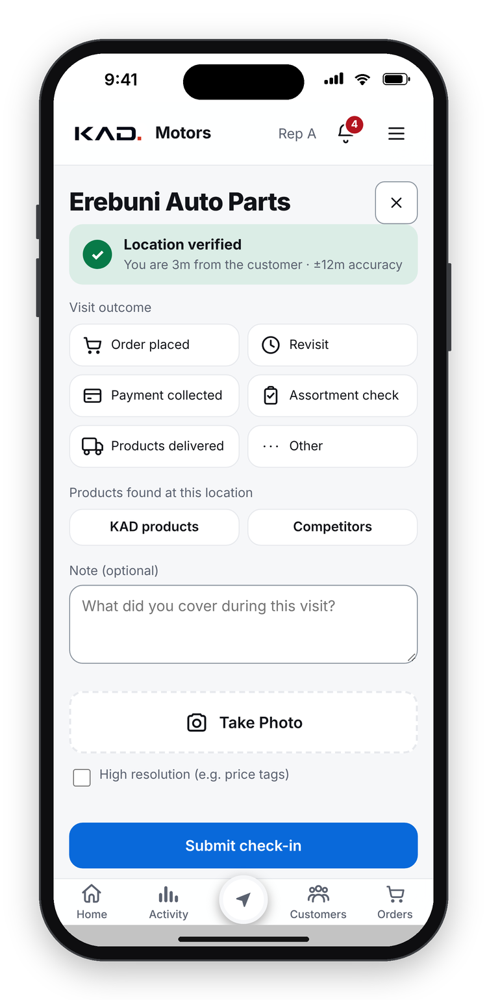
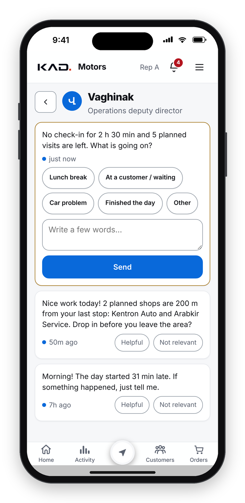
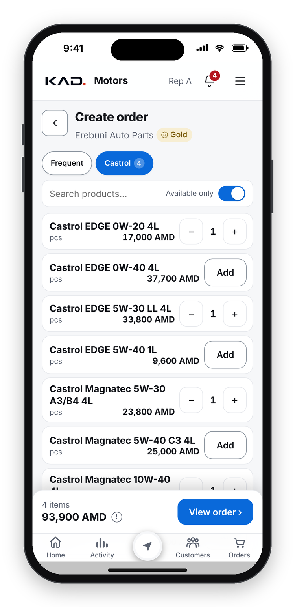

PREPARED FOR CASTROL GLOBAL · YEREVAN, ARMENIA · OCTOBER 2026
Ten distributor problems, solved: a sales platform built by a Castrol distributor
Designed by our whole team (sales, warehouse, accounting, management) with our developers. A field app from a link, an AI deputy director, and a CEO bot, fed daily from the ERP.
THE PROBLEM
WHAT THE PLATFORM DOES
Reps start late, skip visits
→
AI deputy director logs every arrival and visit, reminds, asks a must-answer question, reports weekly
No proof a visit happened
→
GPS check-in only within 300 m of the outlet, with photo and visit outcome
Overdue debt nobody chases
→
Debt aged per invoice; collection task for the next visit; promise dates; broken promise escalated
Orders by phone, wrong prices
→
Orders in the app at central tier prices, from the usual basket, even offline
Discounts that kill margin
→
Up to 3% automatic; more needs approval; below landing cost only the CEO
Cash stuck with reps
→
Every payment tracked from rep to accountant, matched with the ERP automatically
Stock-outs and dead stock
→
Days of stock per product, a ready reorder list, dead-stock decisions with owners
No view of the shelf, fakes
→
Shelf audit at every visit: Castrol presence, full range, fakes, parallel imports, competitors
Late reports, Excel chaos
→
One daily ERP file: checked, reported by the bot, synced to the app; live financial reports
Customers quietly stop buying
→
Each customer's order rhythm is learned; when it breaks, a call-or-visit task
DATA → DECISION → ACTION: EVERY PROBLEM BECOMES A TASK WITH AN OWNER
Collectvisits, GPS, orders, payments, ERP
AnalyseAI and rules spot the problem
Cause & ownerwhy, and who is responsible
Task + deadlinethe solution goes to that person
Controlreminders until done on time
Escalatenot solved? management knows
Vaghinak, our AI deputy director, runs this loop all day: arrivals and lateness, visits and routes, debt collection, calls to customers who stopped ordering, down payments, slow orders, missing data. He speaks to each person in their own tone and escalates only what slips.

GPS check-in

Vaghinak

Order
Our proposal: a pilot partnership
Monthly Castrol shelf and sell-out dashboard for Armenia
Pilot with 1–2 more Castrol distributors
Joint review of results after 90 days
Next step: a 60-minute session with Castrol Global
Screens show made-up demo data. No real customer, staff or company figures are shown in this document.